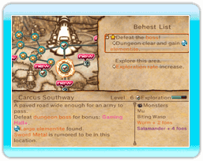
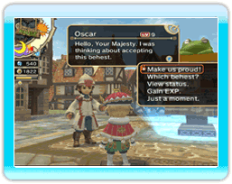

18 |
Posting Behests |
You can create behests during the morning report phase. These behests will be posted on bulletin boards in the realm for adventurers to see. You can post as many behests as there are bulletin boards, so building bulletin parks will increase the number of behests you can post.
When you select a bulletin board, the screen will switch to a world map with the castle in its center. Move the cursor over to a dungeon to view detailed information on the area, the types of behests for that dungeon, and the monsters that adventurers may encounter. Use this information to select the appropriate dungeon for your realm's adventurers. Once you progress to a certain point in the game, you can select the castle town itself to issue behests such as job change requests and national holiday decrees. Adventurers will flock to the behests posted on bulletin boards. Speak to them to view their stats, and hand-pick the adventurer that you want to send on each behest. You can send those who were not chosen to accumulate more experience by exploring the dungeon of their choice. |


|
 |
 |
 |